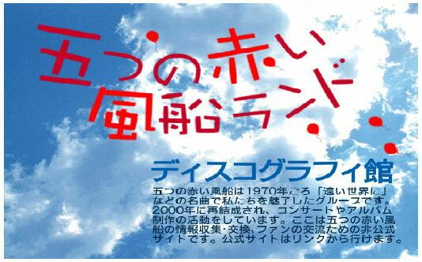

ようこそ、五つの赤い風船ランドへ Bonvenon! Al la Lando de Itutu-no-Akai-Husen

ここは、「五つの赤い風船ランド」の別館です。本館とリンクされています。
ディスコグラフィ館の管理は「おおふじ」が担当しています。
お問い合わせは 「qq6d77q9@cronos.ocn.ne.jp」 まで
●
五つの赤い風船
¥
西岡たかし
プロフィール
（
みどりのうさぎさんのエッセイ
が読めます。）
（
ばーすさんのコンサートレポート
を追加しました）
（STEPさんのエッセイを追加しました）
●
五つの赤い風船
年表
（見納めコンサートで配布）
●●
ディスコグラフィ コンテンツ
●●
●
ソンググラフィ
「フォーク10年 五つの赤い風船(1969-1978)」に記載された約100曲
をもとに、その後の作品を追加中です。
●
曲目検索〜風船
「五つの赤い風船」の曲目からディスクにジャンプ
●
曲目検索〜ソロ
「西岡たかし」 ソロの曲目からディスクへジャンプ
●
ディスコグラフィ １
1968〜72年：五つの赤い風船結成から解散まで
●
ディスコグラフィ ２
1973〜2005年:西岡たかしソロアルバム
●
ディスコグラフィ ３
2000年〜：再結成から現在まで
●
ディスコグラフィ ４
シングルレコード(EP)盤
●
ディスコグラフィ ５
その他のアルバム・レア盤など
●
風船・西岡CDBOX
2002年発売の5枚組CD。音源のアルバムにジャンプ
●
「遠い世界に」談義
おおふじの私的エッセイ